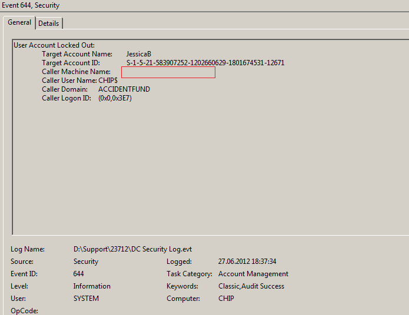

Question
Netwrix Account Lockout Examiner shows no data in the Workstation field, while the fields Domain Controller and Lockout Time are populated correctly. Why is it happening?
Answer
As Netwrix Account Lockout Examiner processes Windows security logs, it gets data present in these logs only. The issue means that the Account locked out event (ID 644 for Windows XP/2003, ID 4740 for the later versions of Windows) contains the empty Caller Machine Name field. Here is an example of the Account locked out event 644 with the empty Caller Machine Name field:
The field can be empty for the events where some local computer account has been locked out due to a local policy or as a result of computer synchronization with some mobile device.